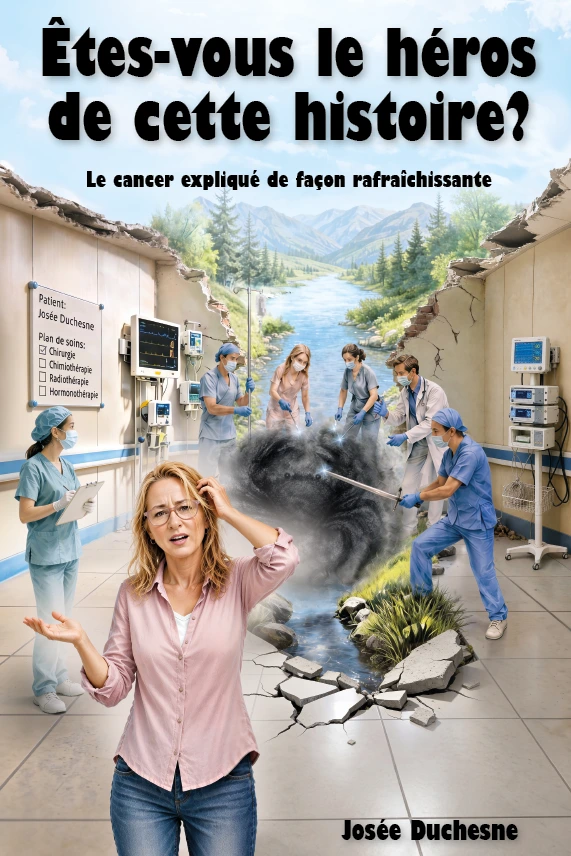

UN LIVRE CAPTIVANT
À la fois conte métaphorique et guide fiable, cet ouvrage aborde un sujet lourd avec une étonnante légèreté. Josée Duchesne réussit à parler de peur, d’injustice, de souffrance et de mort avec un regard un peu moqueur, mais toujours bienveillant. Son œuvre fait rire, réfléchir et, surtout, fait du bien.
Dans ce drôle de monde, les personnes en santé vivent sur la Terre ferme, tandis que les Malades prennent place dans une chaloupe. Ils naviguent sur une rivière dangereuse, accostent sur des îles de guérison et confient leur vie à des Superhéros armés de scalpels, de chimiothérapies et de connaissances scientifiques. Cette métaphore originale rend le cancer concret, visuel, facile à comprendre et à retenir. Elle est brillante, puissante et accessible. Elle traduit avec justesse la peur, l’incertitude et la perte de contrôle, tout en laissant une grande place à l’espoir.
Nourri par l’expérience personnelle de l’autrice et par les témoignages de plusieurs Malades et Superhéros, ce livre possède une sincérité rare. Il rappelle que la maladie n’est ni une faute morale ni une épreuve que l’on gagne grâce au courage ou à la pensée positive. Rafraîchissant, libérateur et profondément humain, il aide les Malades à se sentir moins seuls et les Bien-portants à trouver des mots plus justes.
Se le procurer
